NeuroBook 标识 · 06 成品文件
由 tools/produce.py 生成；几何来自 tools/mark.py、tools/lockup.py 和 tools/wordmark.json。SVG 不含 transform、mask 和 clip-path，换色只改 fill。第三次交付（精修第十九到二十一轮）：默认标志带光环，头型改成两腮微鼓、耳朵加大、头顶微拱，尾巴加粗，猫在底块里放大，应用图标加封面边框；心情差分、终端版本、组合和动画都跟着更新。早期探索草图与前两次交付归档在本地 .local/brand/logo-archive/。使用规则见 第七步的使用规范。整理于 2026-10-03。
SVG · 标志

svg/mark/neurobook-mark.svg跟随文字颜色（currentColor），用在界面里；不画腮红和角饰，赤星之节挖空，光环只画环 · 3.9 KB
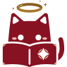

svg/mark/neurobook-mark-crimson.svg象牙或浅色底上的赤红剪影：金色角饰和环，星挖空，深金光环 · 6.8 KB
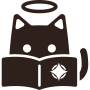

svg/mark/neurobook-mark-ink.svg单色（墨）：不画腮红和角饰，赤星之节挖空，光环只画环 · 3.9 KB

svg/mark/neurobook-mark-ivory.svg反白：深色或赤红底上；深金角饰和环，赤红星，金光环 · 6.8 KB
SVG · 应用图标

svg/app-icon/neurobook-app-icon.svg赤红底块加封面边框：网页清单、宣传图 · 10.4 KB

svg/app-icon/neurobook-app-icon-plain.svg不带边框、猫更大：桌面应用（Windows、Linux）与 favicon 的各个尺寸 · 7.1 KB
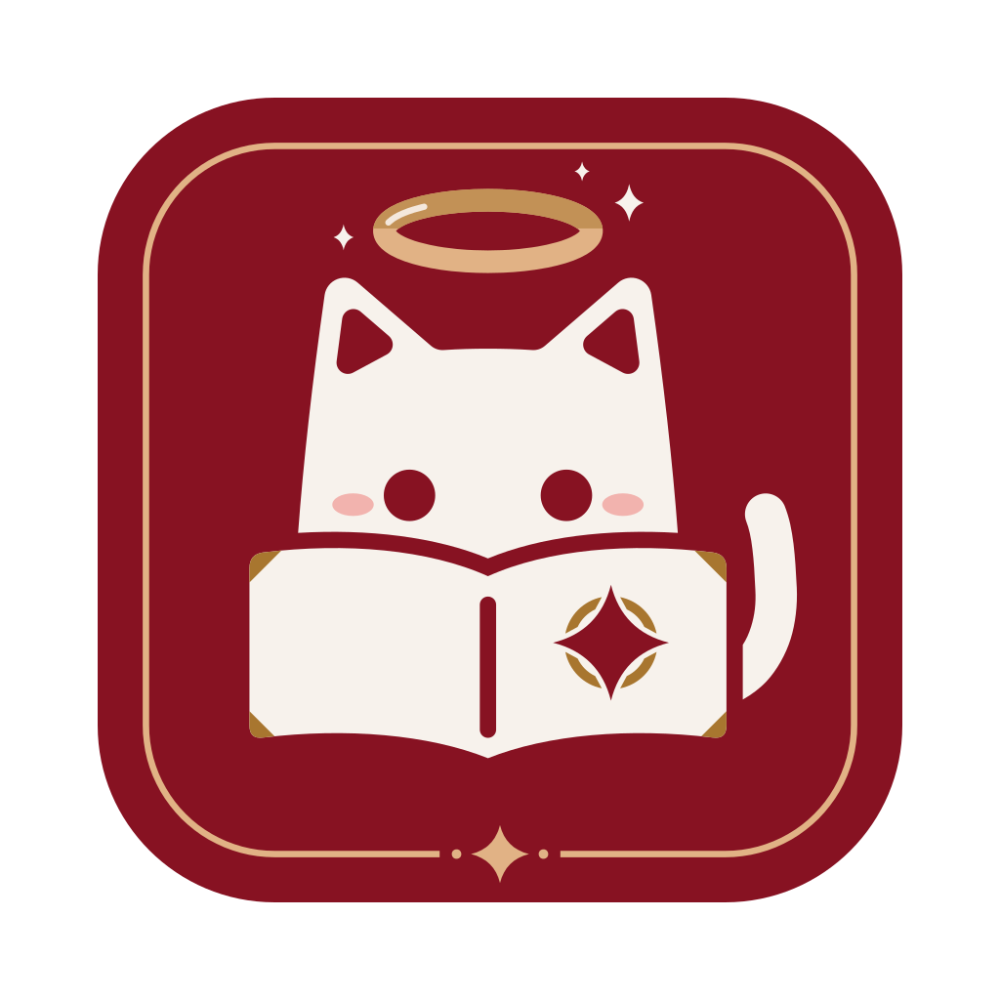

svg/app-icon/neurobook-app-icon-macos.svgmacOS 图标网格（1024 画布、824 底块），带封面边框 · 12.1 KB
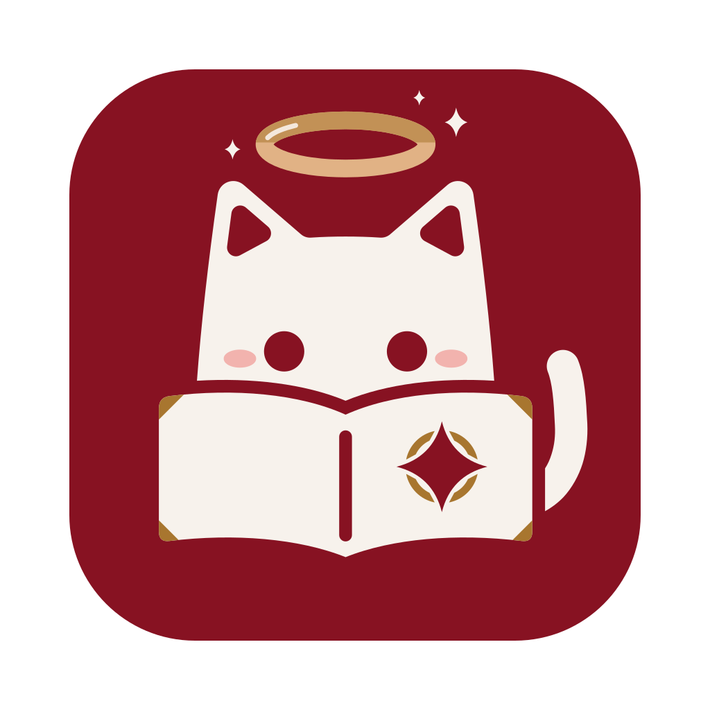

svg/app-icon/neurobook-app-icon-macos-plain.svgmacOS 图标网格，不带边框：iconset 的各个尺寸 · 8.3 KB
SVG · 小尺寸单色

svg/small/neurobook-mark-24.svg24px：托盘、任务栏；像素专用版，currentColor · 0.3 KB

svg/small/neurobook-mark-16.svg16px：托盘、菜单；像素专用版，currentColor · 0.3 KB

svg/small/neurobook-mark-14.svg14px：桌面标题栏；像素专用版，currentColor · 0.3 KB
SVG · 字标

svg/wordmark/neurobook-wordmark.svgcurrentColor · 8.5 KB

svg/wordmark/neurobook-wordmark-ink.svg浅色底 · 8.5 KB

svg/wordmark/neurobook-wordmark-ivory.svg深色底 · 8.5 KB
SVG · 横排组合

svg/lockup/neurobook-lockup-horizontal-color.svg赤红剪影、墨色字标，浅色底 · 16.1 KB

svg/lockup/neurobook-lockup-horizontal-badge.svg应用图标 + 字标：浅色底，白猫黑眼睛 · 19.9 KB

svg/lockup/neurobook-lockup-horizontal-outline.svg描边白猫 + 字标：浅色底，版面更轻 · 27.5 KB

svg/lockup/neurobook-lockup-horizontal-reversed.svg反白：深色底 · 16.2 KB
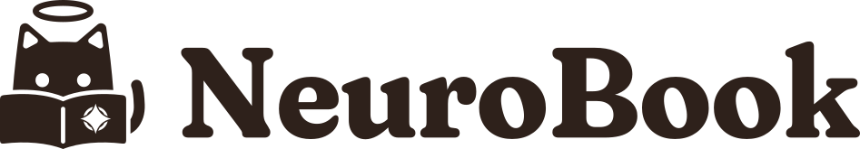

svg/lockup/neurobook-lockup-horizontal-ink.svg单色（墨） · 13.0 KB

svg/lockup/neurobook-lockup-horizontal.svgcurrentColor · 13.0 KB
SVG · 竖排组合
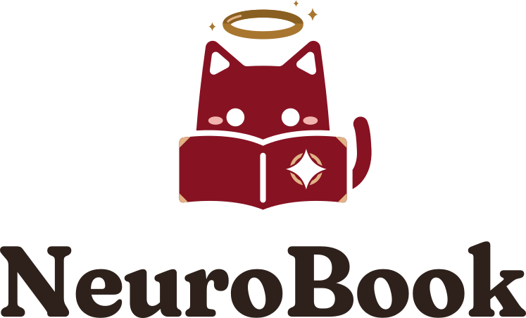

svg/lockup/neurobook-lockup-stacked-color.svg赤红剪影、墨色字标，浅色底 · 16.6 KB

svg/lockup/neurobook-lockup-stacked-badge.svg应用图标 + 字标：浅色底，白猫黑眼睛 · 20.7 KB

svg/lockup/neurobook-lockup-stacked-outline.svg描边白猫 + 字标：浅色底，版面更轻 · 28.6 KB

svg/lockup/neurobook-lockup-stacked-reversed.svg反白：深色底 · 16.7 KB
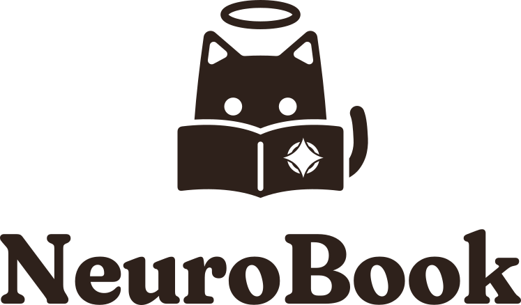

svg/lockup/neurobook-lockup-stacked-ink.svg单色（墨） · 13.4 KB

svg/lockup/neurobook-lockup-stacked.svgcurrentColor · 13.4 KB
PNG · 应用图标
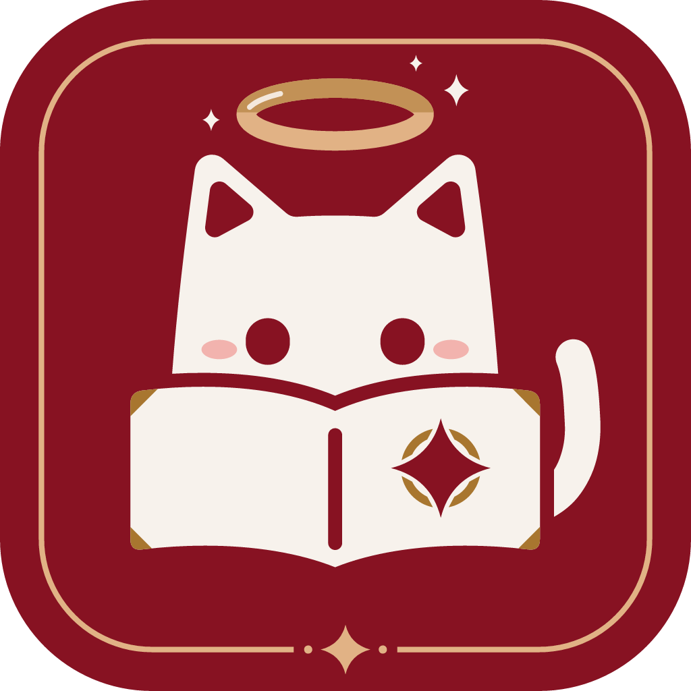

png/app-icon/neurobook-app-icon-1024.png1024px，带封面边框 · 50.6 KB
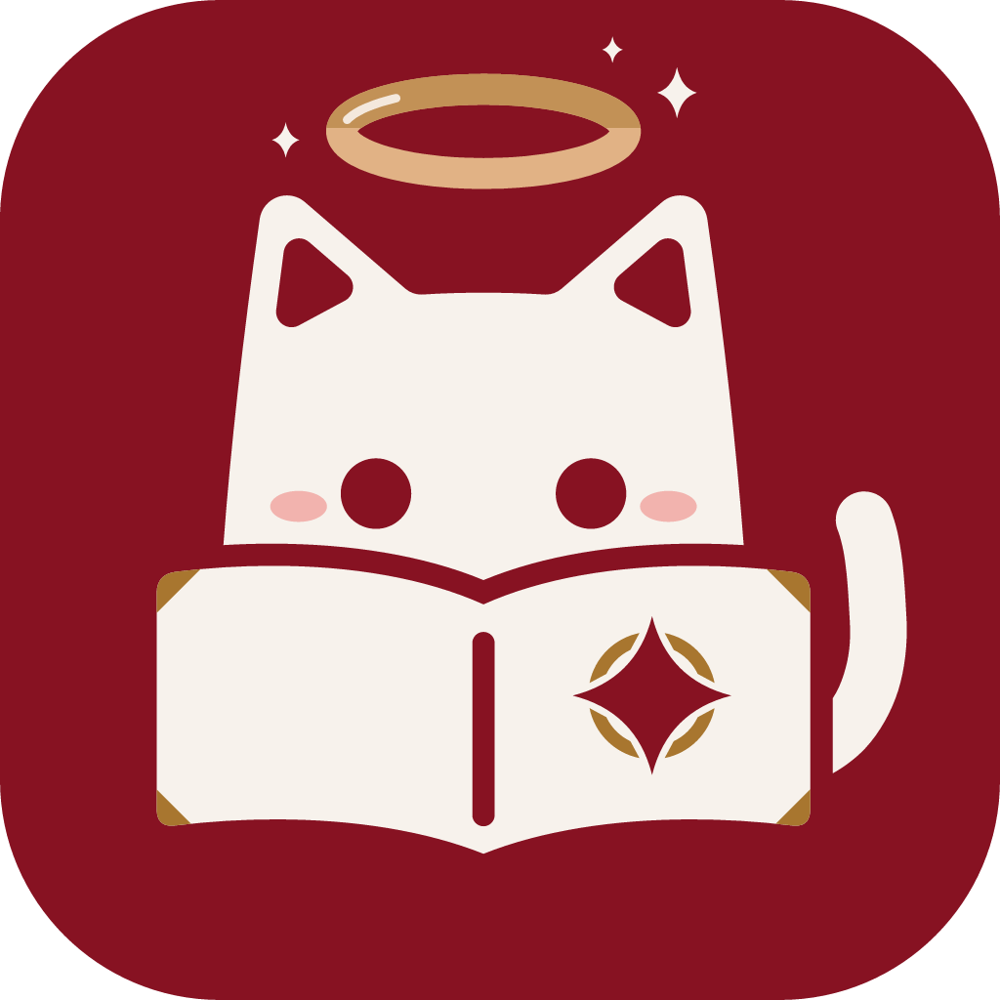

png/app-icon/neurobook-app-icon-plain-1024.png1024px，不带边框 · 42.0 KB

png/app-icon/neurobook-app-icon-256.png256px，带封面边框 · 11.2 KB

png/app-icon/neurobook-app-icon-plain-256.png256px，不带边框 · 9.3 KB

png/app-icon/neurobook-app-icon-32.png32px，带封面边框 · 1.1 KB

png/app-icon/neurobook-app-icon-plain-32.png32px，不带边框 · 1.1 KB
PNG · 标志与组合（透明底）
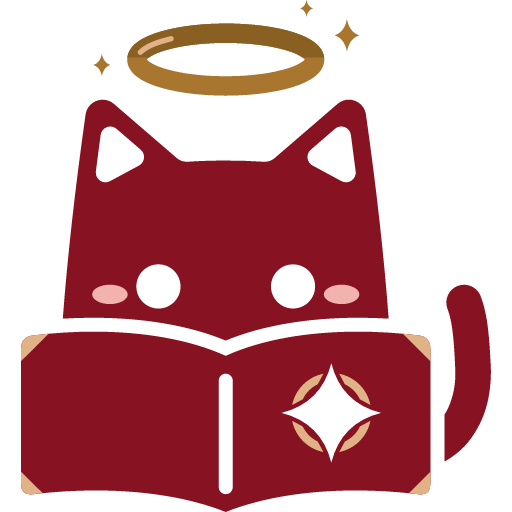

png/mark/neurobook-mark-crimson-512.png标志 512px（crimson） · 21.3 KB
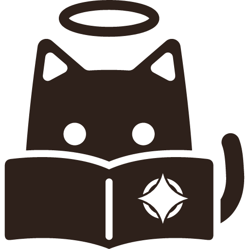

png/mark/neurobook-mark-ink-512.png标志 512px（ink） · 18.0 KB

png/mark/neurobook-mark-ivory-512.png标志 512px（ivory） · 21.4 KB

png/lockup/neurobook-lockup-horizontal-color-1200.png1200px 宽 · 25.8 KB

png/lockup/neurobook-lockup-horizontal-badge-1200.png1200px 宽，应用图标 + 字标 · 27.2 KB

png/lockup/neurobook-lockup-horizontal-outline-1200.png1200px 宽，描边白猫 · 28.8 KB

png/lockup/neurobook-lockup-horizontal-reversed-1200.png1200px 宽 · 25.3 KB
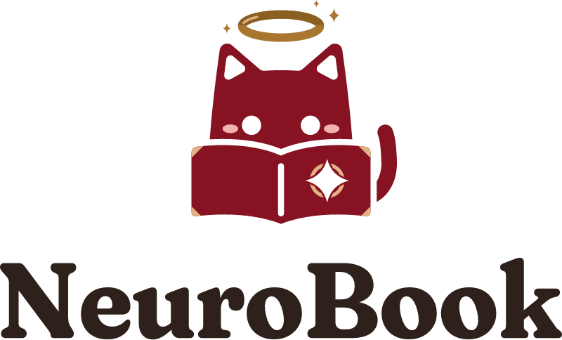

png/lockup/neurobook-lockup-stacked-color-800.png800px 宽 · 26.5 KB
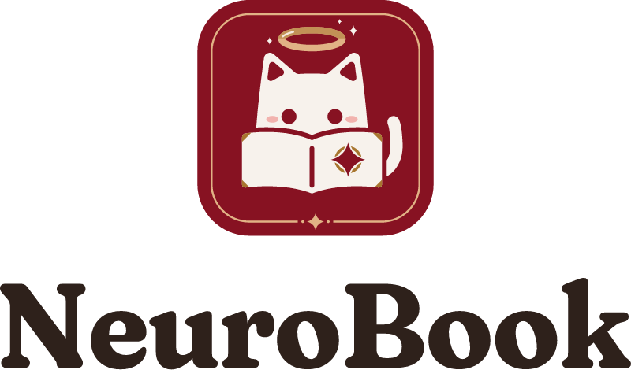

png/lockup/neurobook-lockup-stacked-badge-800.png800px 宽，应用图标 + 字标 · 27.7 KB
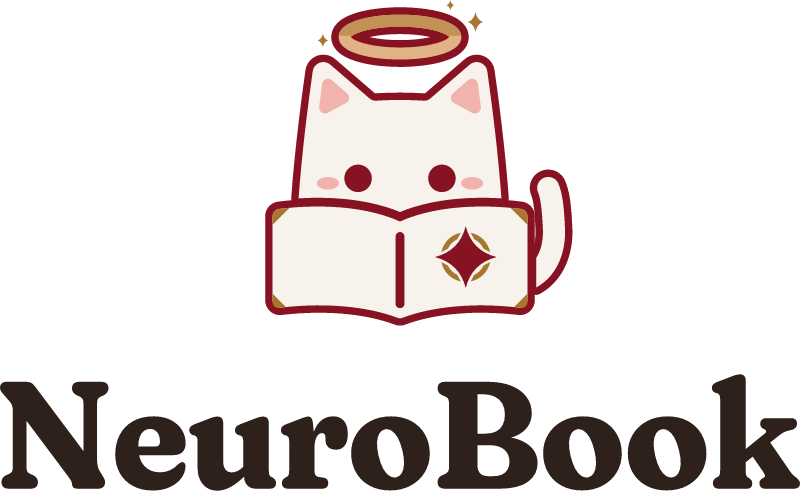

png/lockup/neurobook-lockup-stacked-outline-800.png800px 宽，描边白猫 · 31.3 KB

png/lockup/neurobook-lockup-stacked-reversed-800.png800px 宽 · 26.5 KB
网站

web/favicon.svg矢量 favicon（不带边框）：高分屏浏览器优先用它 · 7.1 KB
web/favicon.ico16、32、48，不带边框；1 倍屏和旧浏览器用 · 3.3 KB

web/apple-touch-icon.png180px 满版方块、不带边框，iOS 自己加圆角 · 5.0 KB
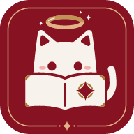

web/icon-192.png网页清单 192px · 8.3 KB
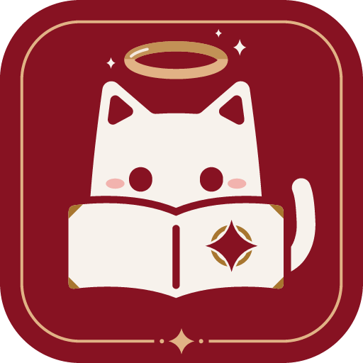

web/icon-512.png网页清单 512px · 23.6 KB
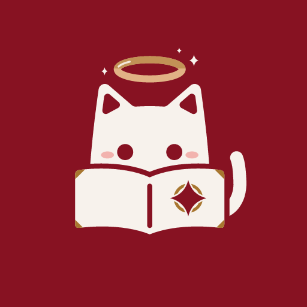

web/icon-maskable-512.png可遮罩图标：标志在 80% 安全圆内 · 13.1 KB
桌面应用
desktop/windows/neurobook.icoWindows：16–256，都从不带边框的 SVG 渲染 · 20.4 KB
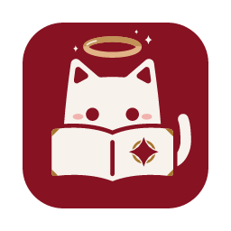
desktop/macos/neurobook.icnsmacOS：由 neurobook.iconset 打包，16–1024 · 93.0 KB
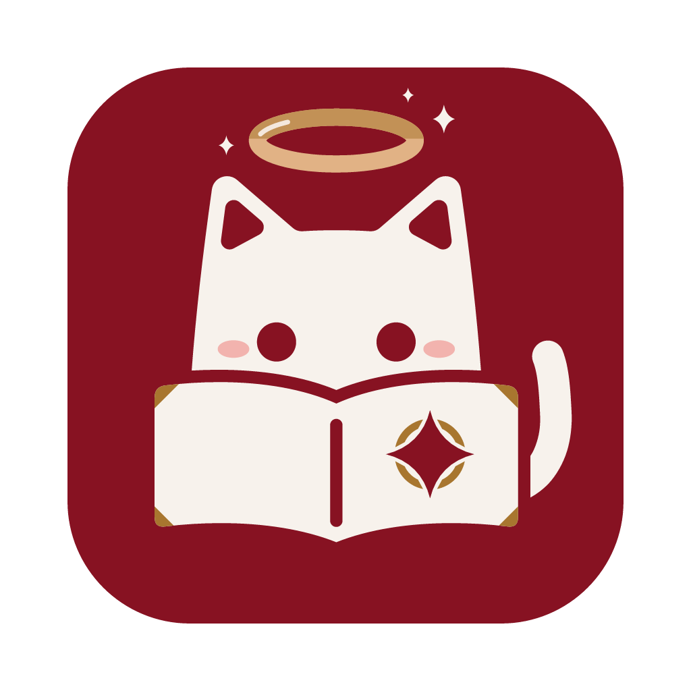

desktop/macos/neurobook.iconset/icon_512x512@2x.pngmacOS iconset（Apple 图标网格） · 35.6 KB
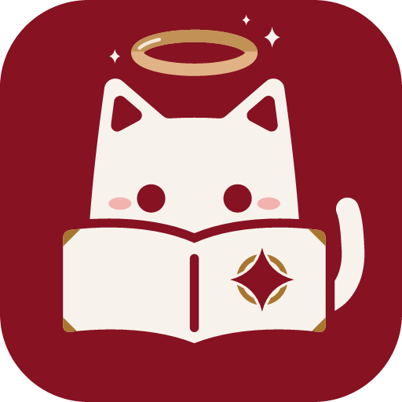

desktop/linux/neurobook.pngLinux：512px PNG，另附同名 SVG；不带边框 · 19.7 KB
心情差分 · SVG

svg/moods/neurobook-mood-focus.svg专注：默认；赤红底块，不带边框 · 8.7 KB

svg/moods/neurobook-mood-focus-dark.svg专注：透明底，放在深色底上 · 8.7 KB

svg/moods/neurobook-mood-think.svg思考：Agent 思考；赤红底块，不带边框 · 8.6 KB

svg/moods/neurobook-mood-think-dark.svg思考：透明底，放在深色底上 · 8.5 KB

svg/moods/neurobook-mood-write.svg写作中：生成正文；赤红底块，不带边框 · 7.9 KB

svg/moods/neurobook-mood-write-dark.svg写作中：透明底，放在深色底上 · 7.8 KB

svg/moods/neurobook-mood-done.svg完成：任务完成；赤红底块，不带边框 · 9.5 KB

svg/moods/neurobook-mood-done-dark.svg完成：透明底，放在深色底上 · 9.5 KB

svg/moods/neurobook-mood-ask.svg等你选择：等用户确认或选分支；赤红底块，不带边框 · 10.9 KB

svg/moods/neurobook-mood-ask-dark.svg等你选择：透明底，放在深色底上 · 10.8 KB

svg/moods/neurobook-mood-error.svg出错：失败、重试；赤红底块，不带边框 · 8.5 KB

svg/moods/neurobook-mood-error-dark.svg出错：透明底，放在深色底上 · 8.4 KB

svg/moods/neurobook-mood-idle.svg空闲：没有任务；赤红底块，不带边框 · 8.9 KB

svg/moods/neurobook-mood-idle-dark.svg空闲：透明底，放在深色底上 · 8.9 KB

svg/moods/neurobook-mood-sleep.svg睡着：长时间空闲、离线；赤红底块，不带边框 · 8.9 KB

svg/moods/neurobook-mood-sleep-dark.svg睡着：透明底，放在深色底上 · 8.8 KB

svg/moods/neurobook-mood-idea.svg灵感：发现新线索；赤红底块，不带边框 · 11.7 KB

svg/moods/neurobook-mood-idea-dark.svg灵感：透明底，放在深色底上 · 11.6 KB

svg/moods/neurobook-mood-shy.svg害羞：被夸、收到好评；赤红底块，不带边框 · 9.9 KB

svg/moods/neurobook-mood-shy-dark.svg害羞：透明底，放在深色底上 · 9.9 KB

svg/moods/neurobook-mood-shy_more.svg羞到躲起来：被大夸特夸；赤红底块，不带边框 · 8.9 KB

svg/moods/neurobook-mood-shy_more-dark.svg羞到躲起来：透明底，放在深色底上 · 8.8 KB
心情差分 · PNG
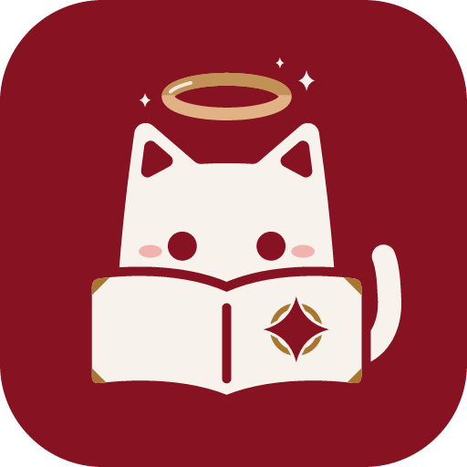

png/moods/neurobook-mood-focus-512.png专注 512px · 18.2 KB
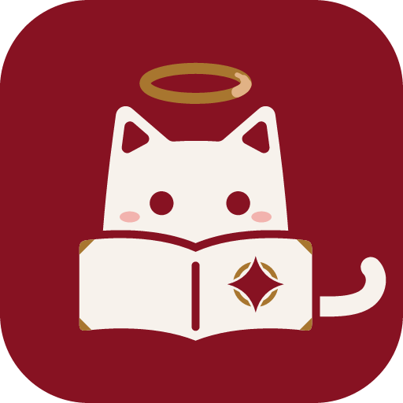

png/moods/neurobook-mood-think-512.png思考 512px · 17.2 KB
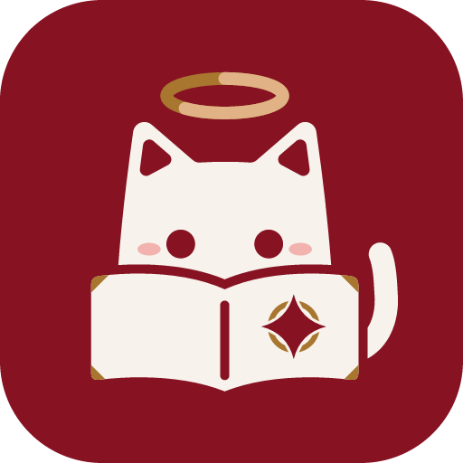

png/moods/neurobook-mood-write-512.png写作中 512px · 17.7 KB
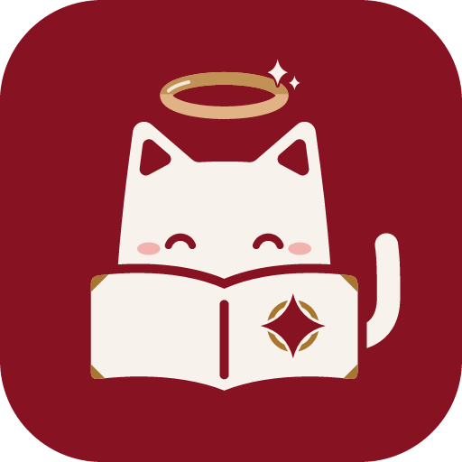

png/moods/neurobook-mood-done-512.png完成 512px · 17.9 KB
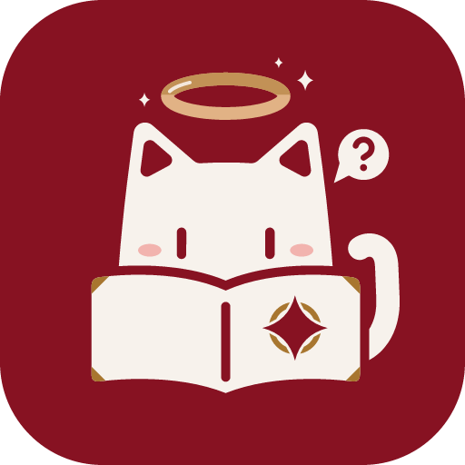

png/moods/neurobook-mood-ask-512.png等你选择 512px · 19.2 KB
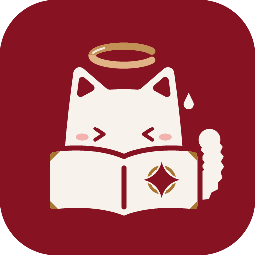

png/moods/neurobook-mood-error-512.png出错 512px · 17.9 KB
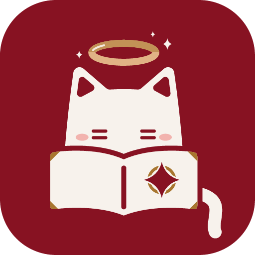

png/moods/neurobook-mood-idle-512.png空闲 512px · 17.5 KB
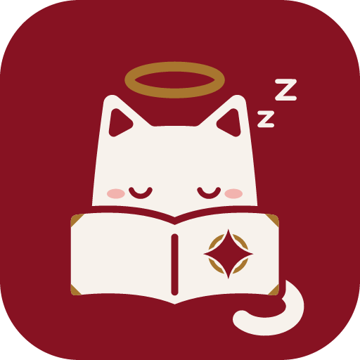

png/moods/neurobook-mood-sleep-512.png睡着 512px · 17.6 KB
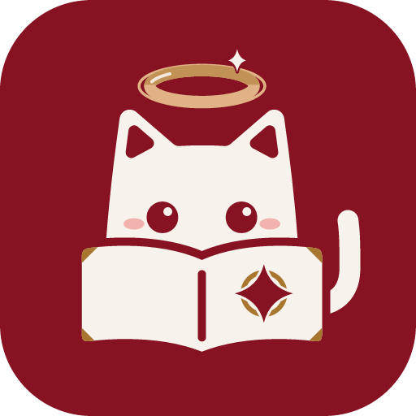

png/moods/neurobook-mood-idea-512.png灵感 512px · 19.0 KB
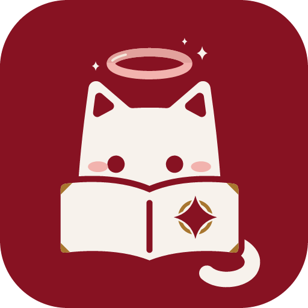

png/moods/neurobook-mood-shy-512.png害羞 512px · 18.5 KB
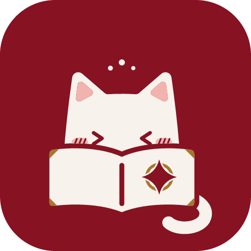

png/moods/neurobook-mood-shy_more-512.png羞到躲起来 512px · 16.5 KB
终端（半块字符，24 位色）
terminal/neurobook-80.ans80 列，深色终端；cat 输出 · 11.6 KB

terminal/neurobook-100.ans100 列，深色终端；cat 输出 · 16.4 KB
terminal/neurobook-120.ans120 列，深色终端；cat 输出 · 22.1 KB

terminal/neurobook-crimson-100.ans100 列，浅色终端 · 15.4 KB
terminal/moods/neurobook-mood-focus-48.ans心情差分 · 专注：48 列 × 30 行，逐像素画 · 4.7 KB
terminal/moods/neurobook-mood-think-48.ans心情差分 · 思考：48 列 × 30 行，逐像素画 · 4.4 KB
terminal/moods/neurobook-mood-write-48.ans心情差分 · 写作中：48 列 × 30 行，逐像素画 · 4.7 KB
terminal/moods/neurobook-mood-done-48.ans心情差分 · 完成：48 列 × 30 行，逐像素画 · 4.8 KB

terminal/moods/neurobook-mood-ask-48.ans心情差分 · 等你选择：48 列 × 30 行，逐像素画 · 5.2 KB
terminal/moods/neurobook-mood-error-48.ans心情差分 · 出错：48 列 × 30 行，逐像素画 · 4.7 KB
terminal/moods/neurobook-mood-idle-48.ans心情差分 · 空闲：48 列 × 30 行，逐像素画 · 4.7 KB
terminal/moods/neurobook-mood-sleep-48.ans心情差分 · 睡着：48 列 × 30 行，逐像素画 · 4.7 KB
terminal/moods/neurobook-mood-idea-48.ans心情差分 · 灵感：48 列 × 30 行，逐像素画 · 4.9 KB
terminal/moods/neurobook-mood-shy-48.ans心情差分 · 害羞：48 列 × 30 行，逐像素画 · 4.9 KB
terminal/moods/neurobook-mood-shy_more-48.ans心情差分 · 羞到躲起来：48 列 × 30 行，逐像素画 · 4.6 KB
动画
animation/neurobook-mood.js网页组件 <neurobook-mood>：切换动画、循环、空闲时跟鼠标；用法见 README.md · 77.6 KB
animation/demo.html演示页：点状态看切换 · 3.8 KB
animation/README.md用法、状态和动作表、以后怎么加动画和改动画 · 4.5 KB
动画 · 循环 SVG

animation/loop/neurobook-mood-focus.svg专注：赤红底块；不要脚本，可当图片用 · 14.5 KB

animation/loop/neurobook-mood-focus-dark.svg专注：透明底，深色背景 · 14.4 KB

animation/loop/neurobook-mood-think.svg思考：赤红底块；不要脚本，可当图片用 · 14.3 KB

animation/loop/neurobook-mood-think-dark.svg思考：透明底，深色背景 · 14.3 KB

animation/loop/neurobook-mood-write.svg写作中：赤红底块；不要脚本，可当图片用 · 20.8 KB

animation/loop/neurobook-mood-write-dark.svg写作中：透明底，深色背景 · 20.7 KB

animation/loop/neurobook-mood-done.svg完成：赤红底块；不要脚本，可当图片用 · 16.4 KB

animation/loop/neurobook-mood-done-dark.svg完成：透明底，深色背景 · 16.3 KB

animation/loop/neurobook-mood-ask.svg等你选择：赤红底块；不要脚本，可当图片用 · 16.4 KB

animation/loop/neurobook-mood-ask-dark.svg等你选择：透明底，深色背景 · 16.3 KB

animation/loop/neurobook-mood-error.svg出错：赤红底块；不要脚本，可当图片用 · 13.6 KB

animation/loop/neurobook-mood-error-dark.svg出错：透明底，深色背景 · 13.6 KB

animation/loop/neurobook-mood-idle.svg空闲：赤红底块；不要脚本，可当图片用 · 14.3 KB

animation/loop/neurobook-mood-idle-dark.svg空闲：透明底，深色背景 · 14.2 KB

animation/loop/neurobook-mood-sleep.svg睡着：赤红底块；不要脚本，可当图片用 · 14.4 KB

animation/loop/neurobook-mood-sleep-dark.svg睡着：透明底，深色背景 · 14.4 KB

animation/loop/neurobook-mood-idea.svg灵感：赤红底块；不要脚本，可当图片用 · 16.6 KB

animation/loop/neurobook-mood-idea-dark.svg灵感：透明底，深色背景 · 16.6 KB

animation/loop/neurobook-mood-shy.svg害羞：赤红底块；不要脚本，可当图片用 · 15.7 KB

animation/loop/neurobook-mood-shy-dark.svg害羞：透明底，深色背景 · 15.7 KB

animation/loop/neurobook-mood-shy_more.svg羞到躲起来：赤红底块；不要脚本，可当图片用 · 15.9 KB

animation/loop/neurobook-mood-shy_more-dark.svg羞到躲起来：透明底，深色背景 · 15.8 KB
动画 · 录屏
animation/video/neurobook-moods-tour.webm十一个状态轮播，360px、24 帧；网页、文档里放视频用 · 236.5 KB